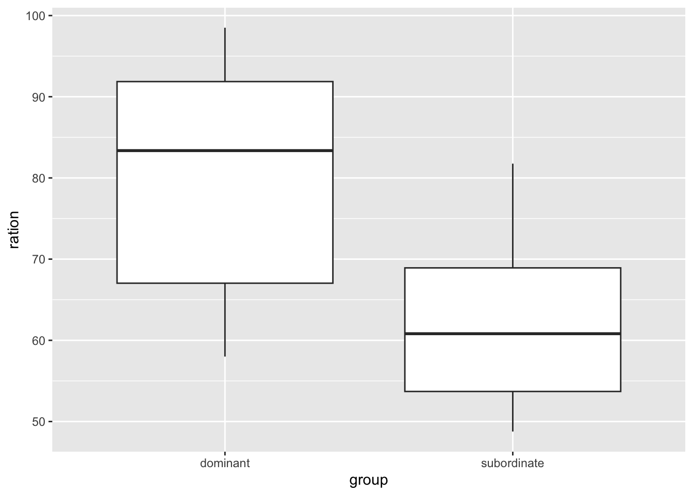

10.2 Linear models with multiple covariates
Here is an example to get us going.
Example: Dissolved oxygen in the River Clyde
The Scottish Environment Protection Agency (SEPA) has a statutory obligation to monitor the state of the environment. As part of that duty, water samples are taken regularly from sampling stations along the Clyde River. Data are available for a twenty year period from the mid-1970’s until the mid-1990’s. A natural measure of water quality is dissolved oxygen (DO). There is interest in identifying the pattern of DO along the river, the nature of any time trends and the relationship between DO and physical variables such as temperature and salinity.
We will read the data using the load function. This loads into our workspace objects which have previously been created and stored in a file in R format, using the save function. In this case, the file contains a single object - a dataframe called clyde.
To keep things simple, we will start with data from a single station which lies 4 miles from the city centre. The subset function is a useful way of creating a dataframe with the subset of interest.
As ever, creating a helpful plot is a good start. The pairs function is an efficient way of viewing a whole set of scatterplots between different variables.
path <- rp.datalink("DO_Clyde")
load(path)
clyde.sub <- subset(clyde, Station == 4)
pairs(clyde.sub[, c(4, 2, 3, 5, 6)])
> There is a very unusual observation. Use a different station and leave this one for an exercise?
A linear regression model relates a response variable \(y\) to a set of explanatory variables (or covariates) \(x_1, \ldots, x_p\) as: \[ y = \beta_0 + \beta_1 x_{1} + \beta_2 x_{2} + \ldots + \beta_p x_{p} + \varepsilon . \] The terms involving the parameters \(\beta_0, \ldots, \beta_p\) for the systematic or structural part of the model. They describe what happens to the mean value of \(y\) as the explanatory variables change. The parameters \(\beta_j (j = 1, \ldots, p)\) can be interpreted as the amount of change in the mean value of \(y\) when \(x_j\) increases by one unit and the other explanatory variables are held fixed.
The error term \(\varepsilon\) reflects the fact that data are almost always subject to variation, from natural processes, measurement error and other sources.
We can also express the model in terms of the data \[\begin{eqnarray*} & y_1, x_{11}, x_{21}, \ldots, x_{p1} \\ & y_2, x_{12}, x_{22}, \ldots, x_{p2} \\ & \ldots\\ & y_n, x_{1n}, x_{2n}, \ldots, x_{pn} \end{eqnarray*}\] as \[ y_i = \beta_0 + \beta_1 x_{1i} + \beta_2 x_{2i} + \ldots + \beta_p x_{pi} + \varepsilon_i . \] where the subscript \(i\) refers to the \(i\)th of the \(n\) observations in the sample.
A linear model can be fitted to the observed data by the principle of least squares. This chooses the values of the model parameters which minimise the sum-of-squares function \[ \sum_{i=1}^n \{y_i - (\beta_0 + \beta_1 x_{1i} + \beta_2 x_{2i} + \ldots + \beta_p x_{pi}) \}^2 . \] The minimising values are the least squares estimates, denoted by \(\hat{\beta}_0, \ldots, \hat{\beta}_p\). The ‘hat’ notation indicates that these are estimates of the true, underlying values \(\beta_0, \ldots, \beta_p\). There is a great deal of well developed theory which is available to find the estimates efficiently.
The plots above suggested strong effects on DO of both temperature and Salinity. Here is a model which allows both of these variables to influence DO.
## Estimate Std. Error t value Pr(>|t|)
## (Intercept) 11.6453157 0.37417251 31.122852 7.953063e-67
## Temperature -0.2996037 0.03782472 -7.920846 5.184592e-13
## Salinity -0.4304683 0.04296172 -10.019809 2.329228e-18The fitted linear model can be written as
\[
y = \hat{\beta_0} + \hat{\beta_1} x_{1} + \hat{\beta_1} x_{2} .
\]
which corresponds to a plane in 3D. This plane has been superimposed onto a 3D plot of the data below. The plane slopes in both the Temperature and the Salinity axes so the effects of these two variables are described simultaneously.
The green vertical lines show the discrepancies between the observed data (red points) and the fitted model. The points at which these lines meet the plane are referred to as the fitted values, defined as \[ \hat{y}_i = \hat{\beta_0} + \hat{\beta_1} x_{1i} + \hat{\beta_1} x_{2i} . \] The discrepancies between the data and the fitted model, referred to as residuals are then \[ r_i = y_i - \hat{y}_i . \]
The plot below uses the rp.lm function from the rpanel package to illustrate the fitted model. This function is designed to illustrate and explore various issues of linear models in simple cases where there are no more than two predictor variables. Here the three-dimensional display can be rotated in the web version of the book or in R on your own computer. The model corresponds to a plane which tilts in both the Temperature and Salinity directions. The coefficients discussed above give the rate of tilt. Vertical lines for the residuals have also been added.